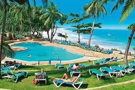

Northern Ireland has a growing activities tourism market. Its natural beauty and reputation for hospitality make it an ideal setting for this type of trip.
Some examples include:
garden and forests
cycling and mountain biking
walking and hiking
fishing
canoeing and water sports
Types of activity tourism
Activity tourism generally combines:
physical activity or adventure
cultural exchange or interaction
engagement with nature
The market is commonly made up of:
hard adventure activities such as climbing, trekking and mountain biking
soft adventure activities such as walking tours, city bike tours, canoe hire or camping
Soft activities make the majority of the market as they:
appeal to a wider range of people
require less physical output than hard activities 
generally have lower perceived or real risks
are easily adapted for different visitors, eg families
Many activities, such as walking, hiking and cycling, are typically free to access and so do not have a value market size in their own right. However, they enhance the visitor experience and can increase opportunities for visitors to spend. this type of visitor will spend money on food, drink and accommodation.
Tourism opportunities
Golf is currently a 'key draw' activity for Republic of Ireland, Great Britain and overseas visitors to Northern Ireland. See golf tourism.
For other business sector insights, see tourism insights.